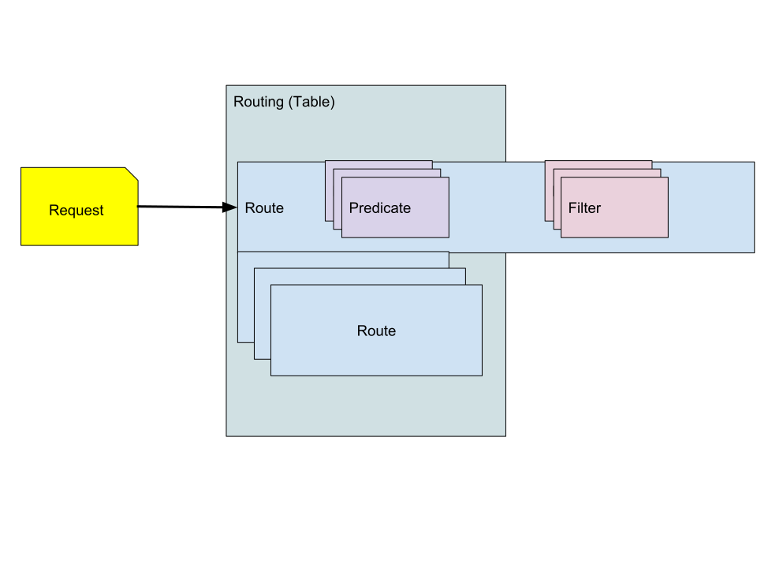

Basics
Architecture¶
The core business of skipper is routing based on HTTP. It performs and scales well, for example it handles more than 800000 routes in production with 60000 requests per second.
Skipper is written as a library and is also a multi binary project with
2 binaries, named skipper and eskip. Skipper is the HTTP proxy
and eskip is a CLI application to verify, print, update or delete
Skipper routes.
Skipper’s internal architecture is split into different packages. The
skipper package has connections to multiple dataclient, that pull
information from different sources, for example local routes from an
eskip file or dynamic routes from Kubernetes ingress objects.
The proxy package gets the routes populated by skipper and has
always a current routing table which will be replaced on change.
A route is one entry in the routing table. A route consists of one or
more predicate, that are used to find a route for a given HTTP
request. A route can also have one or more filter, that can modify
the content of the request or response. A route can point to a
backend, it can be a <shunt>, meaning that skipper serves the requests
for the route, a <loopback>, meaning that the requests will be
matched against the routing table again after filters have modified
them, or a <dynamic>, meaning that the target backend must be set in a filter.
Opentracing API is supported via
tracers and you can find all of them in ./tracing/tracers/. For
example Jaeger is supported.
Skipper has a rich set of metrics that are exposed as json, but can also be exported in Prometheus format.

Concepts¶
Route definition¶
A route consists of an ID, predicates, filters and a backend and is most often written in eskip syntax.
Syntax:
ID:
Predicate1() && .. && PredicateN()
-> filter1()
...
-> filterN()
-> BACKEND
An example routing configuration:
baidu:
Path("/baidu")
-> setRequestHeader("Host", "www.baidu.com")
-> setPath("/s")
-> setQuery("wd", "godoc skipper")
-> "http://www.baidu.com";
google:
*
-> setPath("/search")
-> setQuery("q", "godoc skipper")
-> "https://www.google.com";
yandex:
* && Cookie("yandex", "true")
-> setPath("/search/")
-> setQuery("text", "godoc skipper")
-> tee("http://127.0.0.1:12345/")
-> "https://yandex.ru";
Predicate¶
A Predicate adds a matching rule to a route.
For example the Cookie predicate, Cookie("yandex", "true"), matched
if there is a cookie in the request with name “yandex” and the value
is “true”, else the route processing will go on and try to find
another matching route for the given request. Multiple predicates can
be combined by && which means a logical AND. If you need a
logical OR, you have to create another route.
Special Predicates:
*catch all is always truePath()reduces the number of routes in O(log n) time to scan afterwards a subset in linear timePathSubtree()reduces the number of routes O(log n) time to scan afterwards a subset in linear time
Predicate and routing table¶
A routing table consists of a number of routes. A route has a list of predicates and filters. Predicates match an incoming request to a specific, best matching, route. Each route has a set of filters.

Filter¶
A filter changes a HTTP request or response or both. Multiple filters
can be concatenated by ->.
Some special filters are:
inlineContent()sets the HTTP response body, should be used with status() filter andbackend static()serves static files and should be used withbackend status()sets HTTP status code to a given value, should be used withbackend tee()clones request to given target
Filter in context of an HTTP request¶
The picture shows the transformation of the requests and responses

Backend¶
The last entry of a route is the backend definition, that will be called with the result request after filter processing. Normally this is an URL string.
Special backends:
<loopback>restart route processing with the possibly changed request<shunt>stops processing, used for fast returns<dynamic>target is set dynamically in a filter<$algorithm, "be1", "be2", ..., "beN">load balanced backend with N backends
See more about backends in backend references.
Dataclient¶
Dataclients are used to pull route information from a data source. The
data will be used to create routes according to the dataclient. As a
special case, for example kubernetes dataclient automatically adds
HTTP->HTTPS redirects if skipper is started with -kubernetes-https-redirect.
Dataclients:
Route processing¶
Package skipper has a Go http.Server and does the ListenAndServe
call with the loggingHandler wrapped proxy. The loggingHandler
is basically a middleware for the proxy providing access logs and
both implement the plain Go http.Handler interface.
For each incoming http.Request the proxy will create a request
context and enhance it with an Opentracing API Span.
It will check proxy global ratelimits first and after that lookup the
route in the routing table. After that skipper will apply all request
filters, that can modify the http.Request. It will then check the
route local ratelimits, the circuitbreakers and do the backend
call. If the backend call got a TCP or TLS connection error in a
loadbalanced route, skipper will do a retry to another backend of that
loadbalanced group automatically. Just before the response to the
caller, skipper will process the response filters, that can change the
http.Response.
In two special cases, skipper doesn’t forward the request to the
backend. When the route is shunted (<shunt>), skipper serves the
request alone, by using only the filters. When the route is a
<loopback>, the request is passed to the routing table for finding
another route, based on the changes that the filters made to the
request. In case it will always find a <loopback> route it will stop
after maximum number of loopbacks is reached and logs an error.

Routing mechanism¶
The routing executes the following steps in the typical case:
-
Select the best fitting route by matching the request against the predicates. When no route found, respond with 404 (unless the default status code is configured to a different value).
-
Execute the filters defined in the route in normal order on the request. The filters may or may not alter the request.
-
Forward the request to the backend defined by the route and receive a response.
-
Execute the filters defined in the route in reverse order on the response. The filters may or may not alter the response.
-
Respond to the incoming request with the resulting response.
Route matching¶
Skipper can handle a relatively large number of routes with acceptable
performance, while being able to use any attribute of the incoming HTTP
requests to distinguish between them. In order to be able to do so, the
path matching predicates (Path() and PathSubtree() but not PathRegexp())
have a special role during route matching, which is a tradeoff by
design, and needs to be kept in mind to understand in some cases why a
certain route was matched for a request instead of another.
The route matching logic can be summed up as follows:
-
Lookup in the path tree based on the
Path()and thePathSubtree()predicates, using the path component of the incoming request’s URI. Then the remaining predicates of the found route(s) are evaluated.-
the path lookup is a radix tree with O(log(n)) time complexity
-
in case of intersecting paths, the more specific path is matched in the tree
-
PathRegexp()is not used in the tree, but it is evaluated only afterPath()orPathSubtree(), just like e.g.Method()orHost().
-
-
If step #1 matches multiple routes, which means there are multiple routes in the same position of the path tree, and all other predicates match the request, too, then the route with the highest weight is matched.
-
this is an O(n) lookup, but only on the same leaf
-
the root of the tree is considered a single leaf, so if not using the
Path()orPathSubtree()predicates, the entire lookup will become O(n) over all the routes.
-
-
If #2 results in multiple matching routes, then one route will be selected. It is unspecified which one.
See more details about the predicates here: Predicates.
Route creation¶
Skipper has two kind of routes:
An eskip.Route is the parsed representation of user input. This will
be converted to a routing.Route, when the routing table is built. A
tree of routing.Route will be used to match an incoming Request to a route.
Route creation steps:
- Skipper’s route creation starts with the Dataclient
to fetch routes (
[]*eskip.Route). - These will be first processed by
[]routing.PreProcessor. PreProcessors are able to add, remove, modify all[]*eskip.Route. - After that
[]*eskip.Routeare converted to[]*routing.Route. []routing.PostProcessorare executed. PostProcessors are able to add, remove, modify all[]*routing.Route.- Last the active routing table is swapped. Now all incoming requests are handled by the new routing table
Building skipper¶
Local build¶
To get a local build of skipper for your CPU architecture, you can run
make skipper. To cross compile to non Linux platforms you can use:
make build.darwinfor Mac OS X (amd64)make build.windowsfor Windows (amd64)
The local build will write into ./bin/ directory.
CI build¶
The current used CI flow to build the official docker container, you
can see in delivery.yaml.
Official release versions you will find at
registry.opensource.zalan.do/teapot/skipper:${RELEASE_VERSION},
where ${RELEASE_VERSION} is the git tag got by $(git describe --tags --always --dirty).
Test versions are released at
registry.opensource.zalan.do/teapot/skipper-test:${CDP_BUILD_VERSION}
for every pull request, limited to only repository members, because of
compliance and security reasons.
Testing routes¶
To test routes you can use a local build of skipper and pass arguments
-inline-routes=<route string> or for more complex ones
use a local eskip file on disk and use -routes-file=<filepath>.
Example:
./bin/skipper -address :9999 -inline-routes 'r: * -> setQuery("lang", "pt") -> "http://127.0.0.1:8080/"'
Now you have a proxy running that will set a query to your request URL
and call http://127.0.0.1:8080/?lang=pt
The simplest way of testing a proxy is using a local backend and a local browser.
Local backend example:
./bin/skipper -address :8080 -inline-routes 'r: * -> inlineContent("Hello world!") -> status(200) -> <shunt>'
If you want to do the request and see the response in detail, you can
use curl as a browser, which should be installed on most Linux and
Mac OS X computers.
Example client call to our defined proxy:
% curl localhost:8080 -v
* Rebuilt URL to: localhost:8080/
* Trying ::1...
* Connected to localhost (::1) port 8080 (#0)
> GET / HTTP/1.1
> Host: localhost:8080
> User-Agent: curl/7.49.0
> Accept: */*
>
< HTTP/1.1 200 OK
< Content-Length: 12
< Content-Type: text/plain; charset=utf-8
< Server: Skipper
< Date: Thu, 01 Nov 2018 15:54:13 GMT
<
* Connection #0 to host localhost left intact
Hello world!
YAML Configuration¶
The usage of flags to configure the skipper binary can get quickly out
of hand. You can use a yaml file instead to populate the flags presented
in the skipper -help command.
kubernetes: true
kubernetes-in-cluster: true
kubernetes-https-redirect: true
proxy-preserve-host: true
serve-host-metrics: true
address: ":8080"
enable-ratelimits: true
experimental-upgrade: true
metrics-exp-decay-sample: true
metrics-flavour: ["codahale","prometheus"]
enable-connection-metrics: true
whitelisted-healthcheck-cidr: "172.20.0.0/16"
ignore-trailing-slash: true
inline-routes: 'r: * -> inlineContent("Hello world!") -> status(200) -> <shunt>'
Considering that this file would be named config.yaml you can use it to populate
the flags using the config-file flag:
./bin/skipper -config-file=config.yaml
Performing the same call to the address as exemplified in the previous section should yield the same results.
Current routing table¶
To investigate the current routing table skipper has loaded into its
memory, you can use the -support-listener, which defaults to port
9911 and you have to do a GET request to the /routes endpoint.
Example:
% curl localhost:9911/routes
r: *
-> setQuery("lang", "pt")
-> "http://127.0.0.1:8000";
If you do not see your route, then you have most probably a syntax error in your route definition, such that the route was not loaded into memory.
To print the number of routes, X-Count header, and the last update
timestamp, X-Timestamp header, you can use a HEAD request to the
support listener /routes endpoint:
% curl -I localhost:9911/routes
HTTP/1.1 200 OK
Content-Type: text/plain
X-Count: 1
X-Timestamp: 1541086036
Date: Fri, 02 Nov 2018 00:30:43 GMT
For skipper operators the number of routes can be interesting for statistics and the timestamp to detect skipper instances that have not updated its routing table.
If there are more than 1024 routes used, then paging the results is
possible with the offset and limit query parameters:
curl localhost:9911/routes?offset=2048&limit=512
Route IDs¶
In the following example rid is the route ID:
% curl localhost:9911/routes
rid: *
-> setQuery("lang", "pt")
-> "http://127.0.0.1:8000";
If the route ID has a prefix kube_, then it is a route created by
the Kubernetes dataclient. We do not disallow that you create manually
routes with kube_ prefix, but most of the time you should not use it
in other routes to differentiate the routes created by other
dataclients, in case you use multiple at the same time.